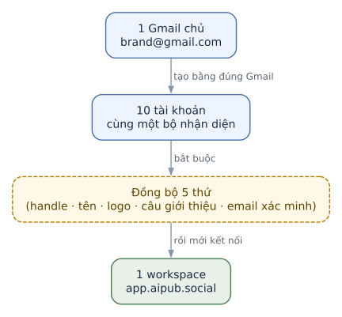
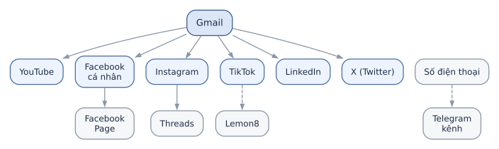

0xdonniechu.github.io · Hướng dẫn aipub.social · cập nhật 2026-11-23
10 kênh, một cái tên
Chưa có tài khoản mạng xã hội? Làm đúng thứ tự này: một Gmail → mười kênh cùng một handle → kết nối vào app.aipub.social. Một buổi là xong.
- 1 buổi là xong
- 1 Gmail
- 1 số điện thoại cho Telegram
- 10 kênh một handle
1 · Chọn handle 2 · Một hay hai thương hiệu 3 · Tạo 10 tài khoản 4 · Đồng bộ 5 · Vào aipub 6 · Lỗi hay gặp

1Chọn một handle, dùng cho cả 10 nơi
“URL hồ sơ” ở đây là phần đứng sau dấu /, không phải website của bạn. Ví dụ instagram.com/nhasachfaha — thì nhasachfaha là handle, và nó phải giống nhau ở mọi kênh.
| Kênh | URL sau khi xong | Tạo bằng | Lưu ý |
|---|---|---|---|
| YouTube | youtube.com/@nhasachfaha | Gmail | Handle gắn với kênh, không phải tài khoản Google |
| Facebook Page | facebook.com/nhasachfaha | Hồ sơ Facebook | Page lấy handle sạch; tên thương hiệu đặt ở đây |
| Facebook cá nhân | facebook.com/nhasachfaha.me | Gmail | Tên thật của người vận hành; Facebook không cho trùng handle với Page |
instagram.com/nhasachfaha | Gmail | Bật tài khoản Professional (miễn phí) | |
| Threads | threads.net/@nhasachfaha | Tự lấy handle và avatar từ Instagram | |
| TikTok | tiktok.com/@nhasachfaha | Gmail | Chuyển sang tài khoản Doanh nghiệp nếu có bán hàng |
| Lemon8 | lemon8-app.com/@nhasachfaha | TikTok | Đăng nhập bằng TikTok, trong app |
linkedin.com/company/nhasachfaha | Gmail | Hồ sơ cá nhân tên thật, Company Page mang tên brand | |
| X (Twitter) | x.com/nhasachfaha | Gmail | Tối đa 15 ký tự — đây là giới hạn quyết định độ dài handle |
| Telegram | t.me/nhasachfaha | Số điện thoại | Tạo một Kênh (Channel), đặt username công khai |
Chốt handle trước khi tạo bất cứ thứ gì: tối đa 15 ký tự, chỉ chữ thường không dấu, số và dấu gạch dưới. Gõ thử vào ô đăng ký của TikTok và Instagram trước — trống ở hai nơi đó thì gần như chắc chắn trống ở tám nơi còn lại. Bị chiếm thì chọn biến thể ngay từ đầu (nhasachfaha.vn, nhasachfaha.hn) rồi dùng đúng biến thể đó cho tất cả.
2Một thương hiệu hay hai?
Câu này là về số thương hiệu, không phải số buổi — mỗi thương hiệu vẫn xong trong một buổi. Một chủ thể thương hiệu = một Gmail = một bộ 10 kênh = một workspace. Có hai tổ chức cần giọng viết khác nhau (ví dụ thương hiệu cá nhân và công ty) thì làm hai bộ, hai Gmail, hai profile trình duyệt.
Đừng làm ba điều này
Dùng chung một Gmail cho hai brand · dùng Gmail cá nhân của bạn làm Gmail chủ · dùng chung một số điện thoại cho cả hai bộ.
3Tạo 10 tài khoản

Thứ tự: Gmail → YouTube → Facebook cá nhân → Facebook Page → Instagram → Threads → TikTok → Lemon8 → LinkedIn → X → Telegram.
- Gmail: đặt theo tên thương hiệu (
nhasachfaha@gmail.com), bật xác thực hai lớp ngay, lưu mã khôi phục. Mất Gmail này là mất cả bộ. - Telegram: tạo bằng số điện thoại, không phải Gmail. Sau đó tạo một Kênh riêng cho thương hiệu và đặt username công khai đúng handle.
- Đừng tạo dồn: làm lần lượt từng kênh, nghỉ giữa các kênh — đăng ký liên tiếp quá nhanh rất dễ bị xếp vào nhóm tài khoản hàng loạt. Nếu một kênh bị chặn xác minh, để kênh đó sang hôm sau; phần còn lại vẫn xong trong buổi.
- Xong một kênh thì “làm ấm” ngay: xác minh email → thêm logo → đăng một bài chào → rồi mới sang kênh kế.
- Hồ sơ Facebook mới thường bị hạn chế vài ngày — tạo sớm, đừng đợi đến ngày cần đăng bài.
4Đồng bộ 5 thứ
- Handle giống nhau ở cả 10 nơi Chỉ khác ở X nếu handle dài hơn 15 ký tự, và ở hồ sơ Facebook cá nhân.
- Tên hiển thị giống nhau, có dấu tiếng Việt được.
- Logo vuông 1024×1024, đúng một file cho mười nơi.
- Câu giới thiệu một câu định vị, dưới 150 ký tự, giống nhau.
- Email xác minh đã bấm ở cả 10 nơi Kiểm tra hộp thư Gmail chủ, kể cả mục Spam.
5Vào app.aipub.social
Chỉ làm khi bước 4 đã tick đủ. Kênh lệch tên hoặc rỗng thì máy học sai giọng, bài nháp đầu tiên sẽ lệch.
- Mở app.aipub.social và đăng ký bằng đúng Gmail chủ — không dùng Gmail khác, không dùng email công ty.
- Xác minh email, vào màn Kết nối kênh, kết nối 10 kênh vừa tạo, chọn gói theo số kênh cần đăng.
- Nếu cửa sổ đăng nhập hỏi “Choose an account”, chọn đúng tài khoản của bộ này — dùng profile trình duyệt riêng cho từng bộ là cách chắc nhất.
Phần kết nối từng màn hình sẽ có hướng dẫn riêng ở bản cập nhật kế tiếp. Trang này chỉ bảo đảm bạn vào đúng thứ tự và đúng tài khoản.
6Lỗi hay gặp
| Hiện tượng | Cách xử lý |
|---|---|
| Handle đã có người dùng | Dùng biến thể đã chọn sẵn ở bước 1, áp cho tất cả kênh |
| “Email đã được sử dụng” | Chọn “Quên mật khẩu” để nhận lại, đừng tạo tài khoản thứ hai |
| TikTok từ chối số điện thoại | Dùng số thứ hai, hoặc đăng ký bằng email |
| Threads không tìm thấy tài khoản | Đăng xuất Instagram, đăng nhập đúng tài khoản của bộ này |
| Lemon8 không có nút đăng ký trên web | Cài app, đăng nhập bằng TikTok |
| Telegram báo username không hợp lệ | Username 5–32 ký tự, chỉ chữ không dấu, số và gạch dưới |
Xong khi
- Có Gmail chủ đã bật xác thực hai lớp, mã khôi phục đã lưu.
- Đủ 10 kênh, cùng handle, cùng logo, cùng câu giới thiệu, email đã xác minh.
- Có ít nhất một bài chào trên Facebook Page, TikTok, Instagram.
- Đã đăng ký app.aipub.social bằng đúng Gmail chủ và kết nối đủ 10 kênh.
Cập nhật 2026-11-23. Đường dẫn đăng ký đã kiểm tra còn hoạt động trong ngày; không phải xác nhận từng ô biểu mẫu.
Bộ 10 kênh gồm Telegram thay cho Facebook Group và Zalo OA. Trên bài đăng, kênh Twitter hiển thị chữ “Twitter” với logo X.
Luồng sản phẩm liên quan: aipub.social — từ ý tưởng đến bài đã duyệt.